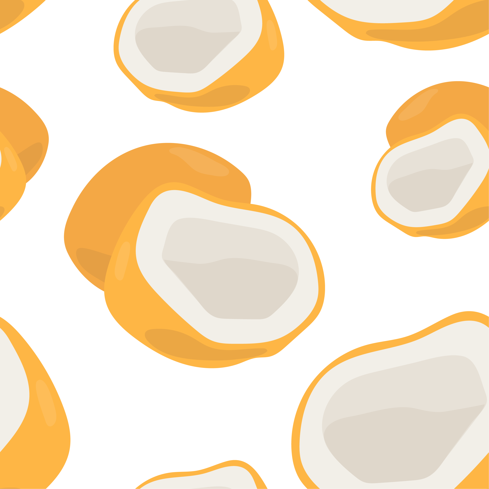
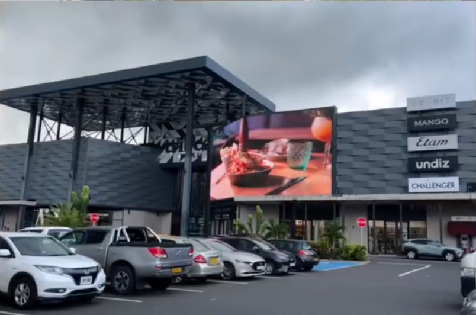
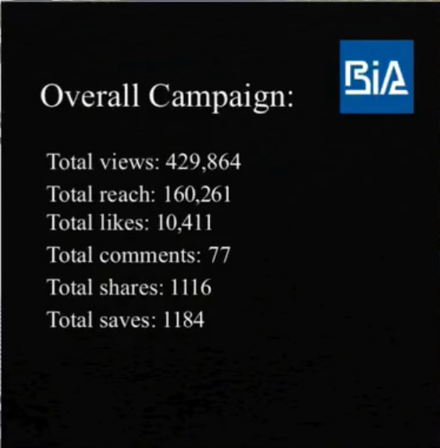
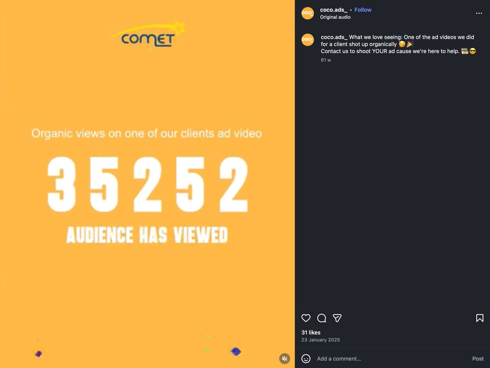
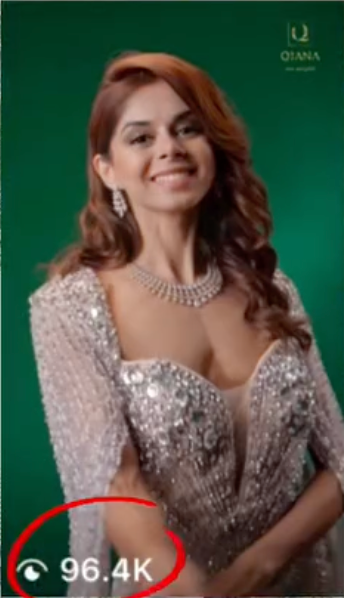
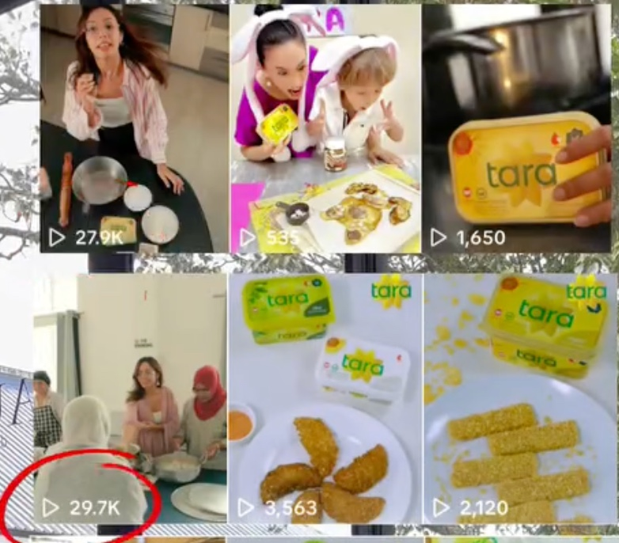
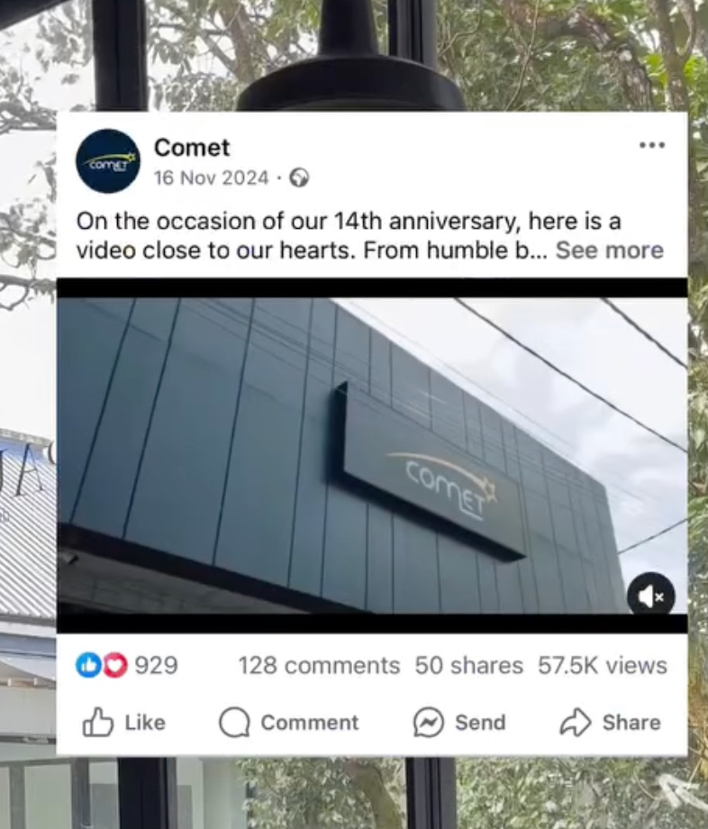
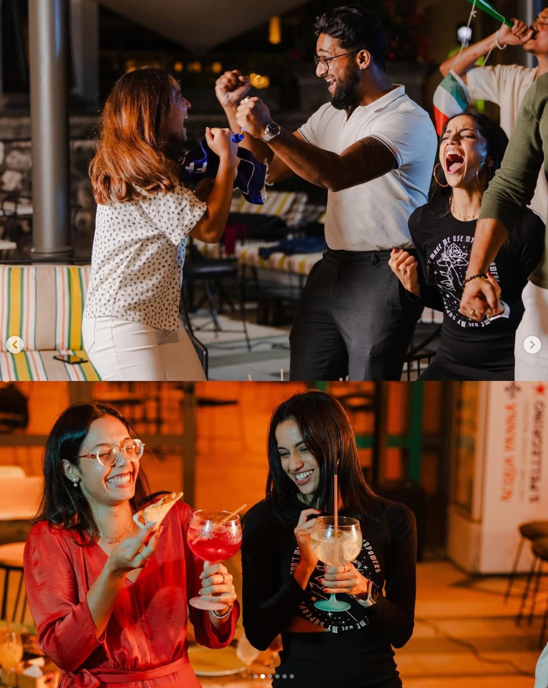
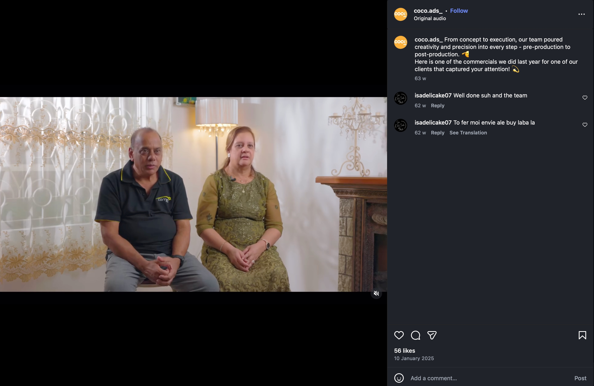

Clear taste, clean execution, and campaigns designed to feel premium rather than over-produced.
Advertising that feels alive and performs.
Turning clicks into clients. Ideas into impact.
Coco Ads builds ad videos, brand strategies, content creation, and influencer marketing that helps brands stand out with more clarity, stronger storytelling, and sharper digital presence.

Campaign Films
Social Content
Brand Direction
- Ad videos
- Brand strategies
- Content creation
- Influencer marketing
Results
Creative that looks polished and gives brands something worth showing.
Coco Ads work shows up across social campaigns, hospitality launches, product content, and large-format placements. The value is not just reach, but how professionally the brand appears while earning it.
That mix matters because the same creative needs to hold up in a reel, on a business profile, in a launch moment, and sometimes on a much bigger physical screen.
Screen to social
Campaigns translate cleanly across placement formats.
Real proof
Views, reach, saves, shares, and campaign screenshots.
Platform-fit output
Content stays native to the feed while still looking elevated.

Placement
Altamarea On Screen
Creative that moved beyond the feed and into high-visibility public display, giving the brand real-world presence.
It proves the work can scale visually while still feeling brand-safe, premium, and easy to recognise at a glance.

Campaign Performance
BIA
429,864 total views, 160,261 reach, 10,411 likes, and 1,184 saves.
Strong engagement signals like shares and saves suggest the creative landed beyond passive impressions.

Organic Reach
Comet
35,252 organic views on one client ad video.
A useful marker that storytelling and edit rhythm were strong enough to travel without relying only on paid push.

High-Attention Creative
Qiana
A standout visual piece that pushed 96.4K views on a single post.
Clean styling and quick visual clarity gave the asset stronger stopping power in-feed.

Repeatable Content System
Tara
Multiple reels pulling solid view counts through a mix of product focus and human-led content.
This is the kind of repeatable content structure brands can build on consistently instead of chasing one-off posts.
Services
A compact team with a full-funnel creative mindset.
The work covers strategy, creative direction, production, and platform-native rollout, without losing taste or consistency.
Ad Videos
Production-led ad content shaped for attention, emotion, and action across social, launch campaigns, and brand stories.
Brand Strategies
Positioning, messaging direction, and campaign thinking that give every piece of content a clearer purpose.
Content Creation
Scroll-worthy visuals, behind-the-scenes stories, launch content, and platform-fit posts built for consistency and recall.
Influencer Marketing
Creator collaborations and community-led moments that feel aligned with the brand rather than rented for reach.
Selected Work
Different brands, different moods, one consistent level of care.
Hospitality, product, and lifestyle brands each need different energy. Coco Ads adapts the tone without losing polish, pacing, or clarity.
That means a campaign can feel playful, cinematic, product-led, or community-first while still keeping the overall brand image refined.

Comet
Story-led anniversary content that paired emotional framing with visible engagement and share momentum.
Balanced visuals, pacing, and client identity turned a milestone post into something more memorable than a standard announcement.
- 57.5K views on a featured campaign post
- Organic ad video proof included in campaign rollout

L'Artista
Hospitality content built around atmosphere, social energy, and moments that feel worth posting.
The output stays social and lively without becoming messy, which matters for brands that sell experience as much as product.
- Behind-the-scenes style content with stronger human appeal
- Launch-friendly visuals shaped for story and reel formats

Client Storytelling
Content that lets brands feel personal and grounded while still looking carefully directed.
Testimonial-style footage works best when it feels honest, but the visual framing still needs enough discipline to stay premium.
- Human-centered footage with polished campaign framing
- Designed to feel real without becoming visually loose
About Coco Ads
Built to help brands look more intentional, not more generic.
Coco Ads combines creative instinct with marketing structure. The work is shaped to feel professional, organic, and easy to remember, with enough restraint to let the brand breathe.
Visual direction that feels premium, warm, and current.
Better pacing, cleaner rollouts, and stronger content rhythm.
Creative output supported by visible proof, not vague claims.